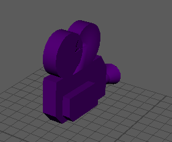
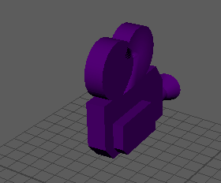
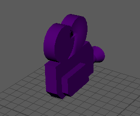
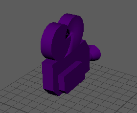
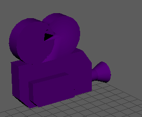

通过移动摄影机了解环视场景的不同方法。
有关可用摄影机导航工具的完整列表，请参见“摄影机工具”(Camera Tools)菜单。
| 目标 | 操作 |
|---|---|
|

翻滚摄影机 |
Windows：按住 Alt 键并单击鼠标左键拖动 Mac：按住 Option 键并单击鼠标左键拖动 或 选择(View > Camera Tools > Tumble Tool) |
|

平移摄影机 |
按住 Alt 键并使用鼠标中键拖动 Mac：按住 Option 键并使用鼠标中键拖动 或 选择(View > Camera Tools > Track Tool) |
|

推拉摄影机 |
按住 Alt 键并单击鼠标右键拖动或单击鼠标左键和中键拖动 Mac：按住 Option 键并单击鼠标右键拖动 或 选择(View > Camera Tools > Dolly Tool) 或 按住 Alt 和 Ctrl 键并拖动要推拉到的场景部分周围的框。
|
|

侧滚（倾斜）摄影机 |
|
|

缩放摄影机镜头 |
|
可以通过(View > Camera Tools)菜单为任何工具设置选项：